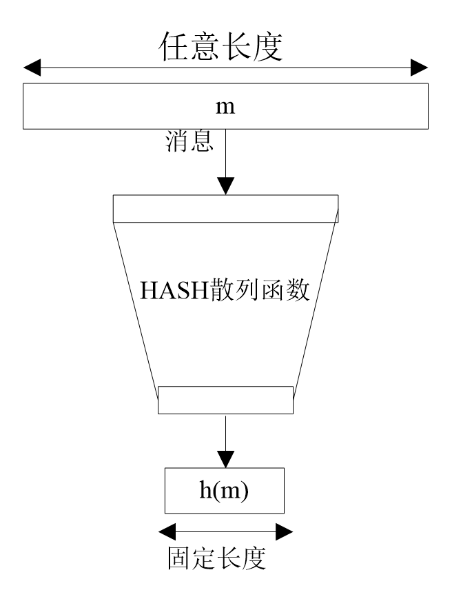

哈希函数¶
哈希函数（Hash Function）把消息或数据压缩成摘要，使得数据量变小。其一般模型如下

显然对于任何一个hash值，理论上存在若干个消息与之对应，即碰撞。
哈希函数的基本需求如下
| 需求 | 描述 |
|---|---|
| 输入长度可变 | hash函数可以应用于任意长度的数据 |
| 输出长度固定 | hash函数的输出长度固定 |
| 效率 | 对于任意消息 x，计算 H(x) 很容易 |
| 单向性 | 对于任意哈希值h，想要找到满足H(x)=h 的x在计算上不可行。 |
| 抗弱碰撞性 | 对于任意消息x，找到满足另一消息y，满足H(x)=H(y) ，在计算上不可行。 |
| 抗强碰撞性 | 找到任意一对满足 H(x)=H(y) 的消息x和y在计算上不可行。 |
| 伪随机性 | 哈希函数的输出满足伪随机性测试标准。 |
散列值的目的如下
- 确保消息的完整性，即确保收到的数据确实和发送时的一样（即没有修改、插入、删除或重放），防止中间人篡改。
- 冗余校验
- 单向口令文件，比如linux系统的密码
- 入侵检测和病毒检测中的特征码检测
目前的Hash函数主要有MD5，SHA1，SHA256，SHA512。目前的大多数hash函数都是迭代性的，即使用同一个hash函数，不同的参数进行多次迭代运算。
| 算法类型 | 输出 Hash 值长度 |
|---|---|
| MD5 | 128 bit / 256 bit |
| SHA1 | 160 bit |
| SHA256 | 256 bit |
| SHA512 | 512 bit |